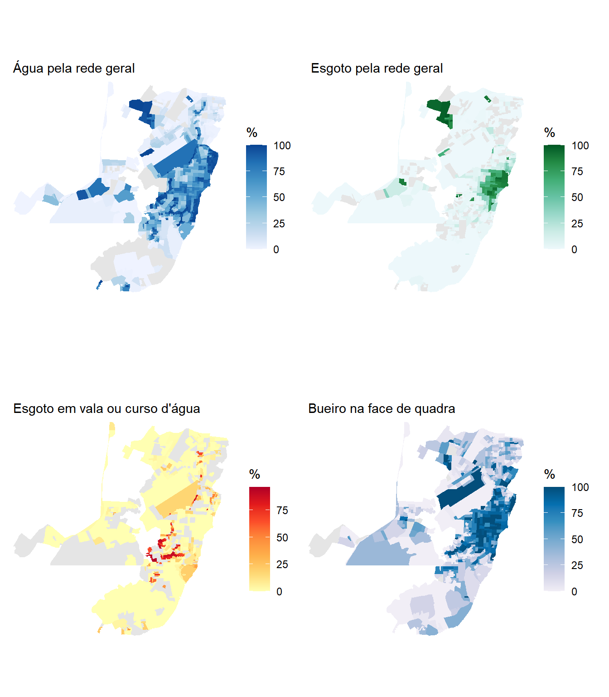

library(tidyverse)
library(censobr)
library(geobr)
library(sf)
library(patchwork)14 Saneamento e Drenagem Urbana
14.1 Introdução
O Capítulo 7 mapeou cobertura de água e esgoto em Recife com dois indicadores binários, que respondiam se o domicílio estava ou não ligado à rede. Era o que aquele capítulo precisava, porque seu objetivo era ensinar a juntar arquivos temáticos dos agregados. Como diagnóstico de saneamento, aqueles dois indicadores são apenas o começo.
Estar ligado à rede geral garante que a água chegue dentro de casa? O esgoto que não vai para a rede vai para onde? E a rua em frente ao domicílio tem por onde escoar a chuva? Este capítulo responde às três perguntas, e para isso precisa de duas fontes. As características do domicílio vêm dos agregados por setor censitário. A drenagem não está lá, porque não é característica do domicílio e sim da via, e vem da Pesquisa Urbanística do Entorno dos Domicílios, apresentada no Capítulo 11.
O município escolhido é Macapá (AP), e a escolha não é arbitrária. Em junho de 2023, ao divulgar a publicação Características gerais dos domicílios e dos moradores 2022, da Pesquisa Nacional por Amostra de Domicílios Contínua, o IBGE apontou a região Norte como a de menor acesso à rede geral de esgoto do país. No detalhamento por unidade da federação, o Amapá aparece na última posição, com menos de 30% dos domicílios urbanos conectados.
Estudar a capital do estado com a pior cobertura do país tem uma vantagem didática. Em casos extremos os fenômenos aparecem com nitidez suficiente para não deixar dúvida sobre o que se está medindo, e as limitações dos indicadores usuais ficam evidentes.
Comecemos carregando os pacotes usados ao longo do capítulo1.
Antes de descer ao município, vale confirmar o diagnóstico com a fonte deste livro. A PNAD Contínua é uma pesquisa amostral e mede domicílios urbanos conectados à rede. O Censo é do universo e permite calcular o mesmo tipo de indicador para todas as unidades da federação, a partir dos agregados por setor censitário.
cobertura_uf <- read_tracts(dataset = "Domicilio", year = 2022) |>
select(code_state, name_state, domicilio01_V00001, domicilio02_V00309) |>
collect() |>
group_by(code_state, name_state) |>
summarise(
dpp = sum(domicilio01_V00001, na.rm = TRUE),
rede = sum(domicilio02_V00309, na.rm = TRUE),
.groups = "drop"
) |>
mutate(perc_rede = 100 * rede / dpp) |>
arrange(perc_rede)
bind_rows(head(cobertura_uf, 5), tail(cobertura_uf, 3)) |>
select(name_state, dpp, perc_rede) |>
knitr::kable(
col.names = c("Unidade da federação", "Domicílios particulares permanentes",
"% com esgotamento por rede geral"),
digits = 1,
format.args = list(big.mark = ".", decimal.mark = ",")
)| Unidade da federação | Domicílios particulares permanentes | % com esgotamento por rede geral |
|---|---|---|
| Amapá | 200.834 | 8,9 |
| Rondônia | 554.778 | 10,8 |
| Pará | 2.443.160 | 12,7 |
| Piauí | 1.071.452 | 14,8 |
| Maranhão | 2.090.582 | 15,0 |
| Minas Gerais | 7.532.517 | 79,8 |
| Distrito Federal | 988.076 | 85,6 |
| São Paulo | 16.221.119 | 90,4 |
Repare que a leitura acima é feita sem filtrar município, o que traz os 468 mil setores do país. Isso é viável porque o Arrow lê apenas as quatro colunas pedidas, conforme discutido na Seção 7.4.1, e a agregação por unidade da federação leva menos de um segundo.
O Censo confirma o diagnóstico e o agrava. O Amapá aparece em último lugar, com contraste de mais de dez vezes em relação às unidades da federação mais bem servidas. O percentual calculado aqui é mais baixo que o da PNAD Contínua porque as duas contas não são a mesma. A pesquisa amostral considera apenas domicílios urbanos, enquanto o cálculo acima inclui todos os domicílios particulares permanentes do estado, urbanos e rurais. Comparar os dois números diretamente seria um erro, e ambos apontam na mesma direção.
cobertura_uf |>
summarise(
brasil_perc_rede = 100 * sum(rede) / sum(dpp)
) |>
knitr::kable(digits = 1, format.args = list(decimal.mark = ","))| brasil_perc_rede |
|---|
| 60,4 |
14.2 Preparando os dados
Macapá tem o mesmo problema de escala territorial que veremos adiante em Manaus. O município é grande e majoritariamente rural, enquanto a população se concentra numa mancha urbana pequena. Como o interesse deste capítulo é a infraestrutura urbana, e como a Pesquisa do Entorno investiga apenas setores urbanos, restringimos a análise a eles desde o início.
macapa <- lookup_muni(name_muni = "Macapá", year = 2022)$code_muni
macapa[1] 1600303O arquivo Básico traz a coluna situacao, que classifica cada setor entre urbano e rural.
basico <- read_tracts(dataset = "Basico", year = 2022) |>
filter(code_muni == macapa) |>
select(code_tract, name_neighborhood, name_district, situacao,
code_type, area_km2, V0001, V0007) |>
collect()
basico |>
group_by(situacao) |>
summarise(
setores = n(),
populacao = sum(V0001, na.rm = TRUE),
area_km2 = sum(area_km2, na.rm = TRUE)
) |>
knitr::kable(digits = 0, format.args = list(big.mark = ".", decimal.mark = ","))| situacao | setores | populacao | area_km2 |
|---|---|---|---|
| Rural | 112 | 24.133 | 5.752 |
| Urbana | 659 | 418.800 | 149 |
| NA | 5 | 0 | 662 |
A mancha urbana concentra a quase totalidade da população em cerca de um quarentavo da área do município. Filtrar por situacao, porém, ainda não resolve o problema do mapa, e a razão merece atenção porque vale para muitos municípios.
A classificação de urbano no Censo é funcional e não espacial. Ela diz que o setor tem características urbanas, e não que ele pertence à cidade. Sedes de vila e povoados afastados também são classificados como urbanos, ainda que fiquem a dezenas de quilômetros da mancha contínua. Basta um deles para obrigar o mapa a enquadrar o município inteiro.
A verificação é simples, olhando a distribuição dos setores urbanos entre os distritos.
basico |>
filter(situacao == "Urbana") |>
group_by(name_district) |>
summarise(setores = n(), populacao = sum(V0001, na.rm = TRUE)) |>
arrange(desc(setores)) |>
knitr::kable(format.args = list(big.mark = ".", decimal.mark = ","))| name_district | setores | populacao |
|---|---|---|
| Macapá | 631 | 398.490 |
| Fazendinha | 24 | 17.933 |
| Bailique | 2 | 1.337 |
| Carapanantuba | 1 | 200 |
| São Joaquim do Pacuí | 1 | 840 |
Os distritos de Macapá e Fazendinha formam a mancha urbana contínua da cidade e concentram mais de 99% da população urbana. Os outros três aparecem com pouquíssimos setores, que são sedes de vila isoladas, entre elas o arquipélago do Bailique, a cerca de cem quilômetros da capital. Restringimos a análise aos dois primeiros.
setores_urbanos <- basico |>
filter(situacao == "Urbana",
name_district %in% c("Macapá", "Fazendinha")) |>
pull(code_tract)
length(setores_urbanos)[1] 655Essa exclusão custa pouco mais de dois mil moradores e devolve um mapa legível. Vale registrar que ela é uma decisão de recorte, e que uma análise voltada às comunidades ribeirinhas do município faria exatamente o contrário, mantendo esses setores e descartando a cidade.
Do arquivo Domicílio vêm todas as variáveis de saneamento. São vinte e cinco colunas, distribuídas em quatro blocos, e a Tabela 14.5 descreve cada um deles. Para selecioná-las sem escrever nome por nome, usamos a num_range(), apresentada no Capítulo 12, com o cuidado do argumento width.
| Bloco | Códigos | Categorias |
|---|---|---|
| Forma de abastecimento de água | V00111 a V00118 |
8 |
| Como a água chega ao domicílio | V00199 a V00201 |
3 |
| Destinação do esgoto | V00309 a V00316 |
8 |
| Destinação do lixo | V00397 a V00402 |
6 |
| Água da rede por cor ou raça | V00143 a V00147 |
5 |
| Esgoto por rede por cor ou raça | V00341 a V00345 |
5 |
A leitura seleciona os seis blocos de uma vez e já restringe o resultado aos setores urbanos.
domicilio <- read_tracts(dataset = "Domicilio", year = 2022) |>
filter(code_muni == macapa) |>
select(code_tract, domicilio01_V00001,
num_range("domicilio02_V00", 111:118, width = 3),
num_range("domicilio02_V00", 199:201, width = 3),
num_range("domicilio02_V00", 309:316, width = 3),
num_range("domicilio02_V00", 397:402, width = 3),
num_range("domicilio02_V00", 143:147, width = 3),
num_range("domicilio02_V00", 341:345, width = 3)) |>
collect()
macapa_sc <- basico |>
filter(code_tract %in% setores_urbanos) |>
left_join(domicilio, by = "code_tract")
dpp <- sum(macapa_sc$domicilio01_V00001, na.rm = TRUE)
dpp[1] 116576Esse total de domicílios particulares permanentes ocupados será o denominador de quase todos os indicadores do capítulo. Como usaremos a mesma conta muitas vezes, guardamos o valor em um objeto em vez de repeti-lo.
14.3 O que é saneamento adequado
Antes de calcular qualquer coisa, é preciso definir o que conta como adequado. A palavra parece dispensar definição e não dispensa, porque a resposta muda conforme o critério adotado, e um relatório que não declare o seu critério não é reproduzível.
O critério que adotamos aqui vem do Índice de Vulnerabilidade Social (IVS), construído pelo Ipea e divulgado no Atlas da Vulnerabilidade Social (Costa & Marguti, 2015). O IVS busca medir a ausência ou a insuficiência de um conjunto de ativos considerados essenciais ao bem-estar, e se organiza em três dimensões, que são infraestrutura urbana, capital humano, e renda e trabalho.
A dimensão de Infraestrutura Urbana reflete as condições de acesso aos serviços de saneamento básico e de mobilidade urbana, e é composta por três indicadores. Dois deles interessam diretamente a este capítulo, que são o percentual de pessoas em domicílios com abastecimento de água e esgotamento sanitário inadequados e o percentual de pessoas em domicílios urbanos sem coleta de lixo. O terceiro trata do tempo de deslocamento de trabalhadores de baixa renda, e é assunto do Capítulo 15.
AvisoO IVS entra como critério, e não como índice calculado
Este livro usa o IVS para definir o que conta como adequado, e não reproduz o índice.
Calcular o IVS exigiria normalizar cada indicador, aplicar pesos e agregar subíndices, procedimentos que vão além da estatística descritiva adotada nesta parte do livro. Mais importante que isso, o índice oficial é calculado por município e por unidade de desenvolvimento humano, e não por setor censitário. Produzir um “IVS por setor” a partir dos agregados geraria um número parecido com o oficial, calculado sobre outra base territorial, o que convida à comparação indevida.
O que fazemos é bem mais modesto e bem mais seguro. Tomamos emprestadas as definições de adequação e calculamos os indicadores que os agregados permitem, deixando claro em cada caso qual é o numerador e qual é o denominador.
Segundo o critério do IVS, o abastecimento de água é inadequado quando não provém de rede geral, e o esgotamento sanitário é inadequado quando não é feito por rede coletora nem por fossa séptica ligada à rede. Traduzidas para as variáveis dos agregados, as duas definições produzem os indicadores a seguir.
Repare que criamos apelidos curtos com mutate() em vez de renomear as colunas com rename(). A diferença importa neste capítulo, porque várias tabelas adiante localizam as colunas pelo nome original, montado com sprintf(). Renomear apagaria os nomes originais e essas buscas passariam a devolver nada, silenciosamente.
macapa_sc <- macapa_sc |>
mutate(
dom = domicilio01_V00001,
redger_a = domicilio02_V00111,
redger_e = domicilio02_V00309,
fossa_s = domicilio02_V00310,
perc_agua_inadeq = 100 * (1 - redger_a / dom),
perc_esg_inadeq = 100 * (1 - (redger_e + fossa_s) / dom)
)
macapa_sc |>
summarise(
agua_inadequada = 100 * (1 - sum(redger_a, na.rm = TRUE) / dpp),
esgoto_inadequado = 100 * (1 - (sum(redger_e, na.rm = TRUE) +
sum(fossa_s, na.rm = TRUE)) / dpp)
) |>
knitr::kable(digits = 1, format.args = list(decimal.mark = ","))| agua_inadequada | esgoto_inadequado |
|---|---|
| 54,6 | 82,5 |
Mais da metade dos domicílios urbanos de Macapá tem abastecimento inadequado pelo critério do IVS, e mais de oito em cada dez têm esgotamento inadequado. Os dois números são muito altos, e o restante do capítulo se dedica a mostrar o que eles escondem.
14.4 A água chega, mas de onde?
O indicador binário diz que pouco menos da metade dos domicílios usa a rede geral. Ele não diz o que faz a maioria restante, e essa informação existe.
formas_agua <- tibble(
Forma = c("Rede geral de distribuição", "Poço profundo ou artesiano",
"Poço raso, freático ou cacimba", "Fonte, nascente ou mina",
"Carro-pipa", "Água da chuva armazenada",
"Rios, açudes, córregos, lagos e igarapés", "Outra forma"),
variavel = sprintf("domicilio02_V00%d", 111:118)
) |>
mutate(
Domicílios = map_dbl(variavel, \(v) sum(macapa_sc[[v]], na.rm = TRUE)),
`%` = 100 * Domicílios / dpp
) |>
select(-variavel)
formas_agua |>
knitr::kable(digits = 1, format.args = list(big.mark = ".", decimal.mark = ","))| Forma | Domicílios | % |
|---|---|---|
| Rede geral de distribuição | 52.978 | 45,4 |
| Poço profundo ou artesiano | 41.376 | 35,5 |
| Poço raso, freático ou cacimba | 20.354 | 17,5 |
| Fonte, nascente ou mina | 84 | 0,1 |
| Carro-pipa | 21 | 0,0 |
| Água da chuva armazenada | 3 | 0,0 |
| Rios, açudes, córregos, lagos e igarapés | 129 | 0,1 |
| Outra forma | 1.097 | 0,9 |
O quadro muda a interpretação. A alternativa dominante à rede geral em Macapá não é a precariedade extrema, e sim o poço, profundo ou raso, que atende mais da metade dos domicílios. Poço não é sinônimo de água insegura, embora seja fonte sem tratamento e sem monitoramento regular. Chamá-lo simplesmente de inadequado, como faz o indicador binário, apaga essa distinção.
Há ainda uma segunda pergunta que o indicador binário não alcança. Estar ligado a alguma fonte não é o mesmo que ter água chegando dentro de casa.
tibble(
Situação = c("Encanada até dentro do domicílio",
"Encanada, mas apenas no terreno",
"Não chega encanada"),
variavel = sprintf("domicilio02_V00%d", 199:201)
) |>
mutate(
Domicílios = map_dbl(variavel, \(v) sum(macapa_sc[[v]], na.rm = TRUE)),
`%` = 100 * Domicílios / dpp
) |>
select(-variavel) |>
knitr::kable(digits = 1, format.args = list(big.mark = ".", decimal.mark = ","))| Situação | Domicílios | % |
|---|---|---|
| Encanada até dentro do domicílio | 106.061 | 91,0 |
| Encanada, mas apenas no terreno | 8.852 | 7,6 |
| Não chega encanada | 1.221 | 1,0 |
Nove em cada dez domicílios têm água encanada até dentro de casa, contra menos da metade ligados à rede geral. A diferença entre os dois números é o retrato de uma cidade que resolveu o encanamento interno por conta própria, com poço, enquanto a rede pública não chegou. São dois indicadores que apontam para políticas diferentes, e apresentar apenas um deles dá uma imagem incompleta.
macapa_geo <- read_census_tract(
code_tract = macapa,
year = 2022,
simplified = FALSE
) |>
select(code_tract) |>
inner_join(macapa_sc, by = "code_tract") |>
mutate(
perc_rede_agua = 100 * redger_a / dom,
perc_encanada = 100 * domicilio02_V00199 / dom
)
mapa_rede <- ggplot(macapa_geo) +
geom_sf(aes(fill = perc_rede_agua), color = NA) +
scale_fill_distiller(palette = "Blues", direction = 1,
name = "%", na.value = "gray90", limits = c(0, 100)) +
coord_sf(expand = FALSE) +
labs(subtitle = "Rede geral de distribuição") +
theme_minimal() +
theme(axis.text = element_blank(), axis.ticks = element_blank(),
panel.grid = element_blank())
mapa_encanada <- ggplot(macapa_geo) +
geom_sf(aes(fill = perc_encanada), color = NA) +
scale_fill_distiller(palette = "Blues", direction = 1,
name = "%", na.value = "gray90", limits = c(0, 100)) +
coord_sf(expand = FALSE) +
labs(subtitle = "Encanada dentro do domicílio") +
theme_minimal() +
theme(axis.text = element_blank(), axis.ticks = element_blank(),
panel.grid = element_blank())
mapa_rede + mapa_encanada
As duas escalas vão de zero a cem, de propósito, para que a comparação seja direta. O mapa da direita é quase todo escuro e o da esquerda é irregular, o que confirma no território o que a tabela mostrou.
14.5 O gradiente do esgotamento
Se no abastecimento a alternativa à rede é razoável, no esgotamento a história é outra. O questionário registra oito destinações, e olhá-las em sequência revela um gradiente que vai do adequado ao francamente insalubre.
esgoto <- tibble(
Destinação = c("Rede geral ou pluvial", "Fossa séptica ou filtro ligada à rede",
"Fossa séptica ou filtro não ligada à rede",
"Fossa rudimentar ou buraco", "Vala",
"Rio, lago, córrego ou mar", "Outra forma",
"Não tinha banheiro nem sanitário"),
variavel = sprintf("domicilio02_V00%d", 309:316)
) |>
mutate(
Domicílios = map_dbl(variavel, \(v) sum(macapa_sc[[v]], na.rm = TRUE)),
`%` = 100 * Domicílios / dpp
) |>
select(-variavel)
esgoto |>
knitr::kable(digits = 1, format.args = list(big.mark = ".", decimal.mark = ","))| Destinação | Domicílios | % |
|---|---|---|
| Rede geral ou pluvial | 15.938 | 13,7 |
| Fossa séptica ou filtro ligada à rede | 4.472 | 3,8 |
| Fossa séptica ou filtro não ligada à rede | 48.259 | 41,4 |
| Fossa rudimentar ou buraco | 32.314 | 27,7 |
| Vala | 1.384 | 1,2 |
| Rio, lago, córrego ou mar | 12.517 | 10,7 |
| Outra forma | 560 | 0,5 |
| Não tinha banheiro nem sanitário | 44 | 0,0 |
O corte binário do Capítulo 7 juntaria as duas primeiras linhas de um lado e as seis restantes do outro. O gradiente mostra por que isso é insuficiente. A destinação mais frequente em Macapá é a fossa séptica não ligada à rede, seguida da fossa rudimentar, e as duas juntas respondem por cerca de sete em cada dez domicílios. São situações intermediárias, que não equivalem ao lançamento direto em curso d’água e tampouco ao tratamento.
O que mais chama atenção é a sexta linha. Um em cada dez domicílios urbanos de Macapá lançava esgoto diretamente em rio, lago, córrego ou mar. Levado ao mapa, o indicador não é uniforme.
macapa_geo <- macapa_geo |>
mutate(
perc_curso_agua = 100 * (domicilio02_V00313 + domicilio02_V00314) / dom
)
ggplot(macapa_geo) +
geom_sf(aes(fill = perc_curso_agua), color = NA) +
scale_fill_distiller(palette = "YlOrRd", direction = 1,
name = "% em vala\nou curso d'água",
na.value = "gray90") +
coord_sf(expand = FALSE) +
theme_minimal() +
theme(axis.text = element_blank(), axis.ticks = element_blank(),
panel.grid = element_blank())
A concentração é evidente em algumas áreas. Agregando por bairro, é possível nomeá-las.
bairros <- macapa_sc |>
filter(!is.na(name_neighborhood)) |>
group_by(name_neighborhood) |>
summarise(
dom = sum(dom, na.rm = TRUE),
rede = sum(redger_e, na.rm = TRUE),
vala = sum(domicilio02_V00313, na.rm = TRUE),
curso = sum(domicilio02_V00314, na.rm = TRUE)
) |>
filter(dom >= 300) |>
mutate(
perc_rede = 100 * rede / dom,
perc_curso_agua = 100 * (vala + curso) / dom
)
bairros |>
slice_max(perc_curso_agua, n = 6) |>
select(name_neighborhood, dom, perc_curso_agua, perc_rede) |>
knitr::kable(
col.names = c("Bairro", "Domicílios", "% em vala ou curso d'água", "% com rede geral"),
digits = 1,
format.args = list(big.mark = ".", decimal.mark = ",")
)| Bairro | Domicílios | % em vala ou curso d’água | % com rede geral |
|---|---|---|---|
| Congós | 4.856 | 52,0 | 1,3 |
| Muca | 3.177 | 41,3 | 2,7 |
| Nova Esperança | 1.027 | 38,8 | 0,0 |
| Jardim Marco Zero | 4.770 | 34,4 | 2,8 |
| Novo Buritizal | 6.620 | 28,7 | 14,8 |
| Universidade | 4.440 | 25,7 | 2,1 |
Em alguns bairros, mais de um terço dos domicílios lança esgoto em vala ou curso d’água, e a coluna da direita mostra que são exatamente os bairros a que a rede não chegou. Vale ainda contar quantos bairros estão inteiramente fora da rede.
bairros |>
summarise(
bairros_analisados = n(),
sem_nenhuma_ligacao = sum(perc_rede == 0),
domicilios_nesses_bairros = sum(dom[perc_rede == 0])
) |>
knitr::kable(format.args = list(big.mark = ".", decimal.mark = ","))| bairros_analisados | sem_nenhuma_ligacao | domicilios_nesses_bairros |
|---|---|---|
| 56 | 15 | 14.699 |
Não se trata de cobertura baixa. Trata-se de ausência completa de rede em boa parte dos bairros da cidade.
14.6 Coleta de lixo
O terceiro componente do saneamento básico é o resíduo sólido, e é também o segundo indicador da dimensão de Infraestrutura Urbana do IVS.
tibble(
Destinação = c("Coletado no domicílio por serviço de limpeza",
"Depositado em caçamba de serviço de limpeza",
"Queimado na propriedade", "Enterrado na propriedade",
"Jogado em terreno baldio, encosta ou área pública",
"Outro destino"),
variavel = sprintf("domicilio02_V00%d", 397:402)
) |>
mutate(
Domicílios = map_dbl(variavel, \(v) sum(macapa_sc[[v]], na.rm = TRUE)),
`%` = 100 * Domicílios / dpp
) |>
select(-variavel) |>
knitr::kable(digits = 1, format.args = list(big.mark = ".", decimal.mark = ","))| Destinação | Domicílios | % |
|---|---|---|
| Coletado no domicílio por serviço de limpeza | 105.991 | 90,9 |
| Depositado em caçamba de serviço de limpeza | 7.391 | 6,3 |
| Queimado na propriedade | 1.115 | 1,0 |
| Enterrado na propriedade | 7 | 0,0 |
| Jogado em terreno baldio, encosta ou área pública | 712 | 0,6 |
| Outro destino | 924 | 0,8 |
O contraste com o esgotamento é grande. A coleta de lixo alcança nove em cada dez domicílios urbanos, e somando a caçamba de serviço de limpeza chega-se a mais de noventa e sete por cento. Os três componentes do saneamento básico não caminham juntos, e um índice que os combine numa única nota esconde exatamente isso. É por essa razão que apresentamos os três separadamente antes de qualquer síntese.
14.7 Quem fica de fora
Os agregados de 2022 trazem água e esgoto já cruzados com a cor ou raça da pessoa responsável pelo domicílio. Isso permite descrever desigualdade de acesso sem recorrer aos microdados, o que é raro e pouco explorado.
O cuidado decisivo aqui é o denominador. Cada percentual precisa ser calculado sobre o total de domicílios com responsável daquela cor ou raça, e não sobre o total de domicílios do setor. Com o denominador errado, o indicador deixaria de medir acesso e passaria a medir composição racial da população.
Os totais por cor ou raça do responsável estão no arquivo Pessoas, no bloco de Cor ou Raça, e não no arquivo Domicílio.
pessoas <- read_tracts(dataset = "Pessoas", year = 2022) |>
filter(code_muni == macapa) |>
select(code_tract, num_range("raca_V0", 1332:1336)) |>
collect()
macapa_sc <- macapa_sc |>
left_join(pessoas, by = "code_tract")Com os denominadores em mãos, montamos a tabela comparativa.
desigualdade <- tibble(
`Cor ou raça do responsável` = c("Branca", "Preta", "Amarela", "Parda", "Indígena"),
total = sprintf("raca_V0%d", 1332:1336),
agua = sprintf("domicilio02_V00%d", 143:147),
esgoto = sprintf("domicilio02_V00%d", 341:345)
) |>
mutate(
Responsáveis = map_dbl(total, \(v) sum(macapa_sc[[v]], na.rm = TRUE)),
`% com água da rede` = 100 * map_dbl(agua, \(v) sum(macapa_sc[[v]], na.rm = TRUE)) / Responsáveis,
`% com esgoto na rede` = 100 * map_dbl(esgoto, \(v) sum(macapa_sc[[v]], na.rm = TRUE)) / Responsáveis
) |>
select(-total, -agua, -esgoto)
desigualdade |>
knitr::kable(digits = 1, format.args = list(big.mark = ".", decimal.mark = ","))| Cor ou raça do responsável | Responsáveis | % com água da rede | % com esgoto na rede |
|---|---|---|---|
| Branca | 23.998 | 43,8 | 15,6 |
| Preta | 17.131 | 43,7 | 11,7 |
| Amarela | 46 | 39,1 | 37,0 |
| Parda | 75.019 | 46,1 | 13,1 |
| Indígena | 119 | 27,7 | 13,4 |
A leitura precisa ser cuidadosa, e por duas razões opostas.
No abastecimento de água, as diferenças entre brancos, pretos e pardos são pequenas, de poucos pontos percentuais. Isso não significa ausência de desigualdade racial em Macapá, significa que a carência de rede é tão generalizada que atinge todos os grupos de forma parecida. Quando quase ninguém tem, a diferença entre quem tem se comprime.
No esgotamento, a diferença é proporcionalmente maior, com os domicílios de responsável branco apresentando cobertura cerca de um terço acima da dos de responsável preto. Ainda assim, os patamares são baixos para todos os grupos, e nenhum deles chega a um sexto dos domicílios ligados à rede.
As duas últimas linhas exigem cautela adicional. Os responsáveis de cor ou raça amarela e indígena somam poucas dezenas de domicílios em toda a cidade, e percentuais calculados sobre bases tão pequenas são instáveis. Apresentamos as linhas para não omitir grupos, e registramos que elas não sustentam conclusão.
Cabe uma última observação sobre o que esses números são e não são. Eles descrevem uma diferença de acesso entre grupos. Não descrevem o mecanismo que a produz, que envolve renda, localização e história de ocupação da cidade, e que os agregados sozinhos não permitem investigar.
14.8 Drenagem urbana
Água, esgoto e lixo são características do domicílio. A drenagem não é. Ela pertence à via, e por isso não está no arquivo Domicílio, e sim na Pesquisa Urbanística do Entorno dos Domicílios.
Usamos o bloco de domicílios do arquivo de Entorno, pelo motivo já discutido no Capítulo 15, que é medir quantas moradias estão diante de cada situação, e não quantos metros de via existem.
entorno <- read_tracts(dataset = "Entorno", year = 2022) |>
filter(code_muni == macapa) |>
select(code_tract, name_neighborhood,
domicilios_V05000,
domicilios_V05006, domicilios_V05007, domicilios_V05008,
domicilios_V05009, domicilios_V05010, domicilios_V05011) |>
collect() |>
filter(code_tract %in% setores_urbanos)
investigados <- sum(entorno$domicilios_V05000, na.rm = TRUE)
dom_urbanos <- basico |>
filter(code_tract %in% setores_urbanos) |>
summarise(total = sum(V0007, na.rm = TRUE)) |>
pull(total)
tibble(
setores_com_entorno = nrow(entorno),
domicilios_investigados = investigados,
cobertura = 100 * investigados / dom_urbanos
) |>
knitr::kable(digits = 1, format.args = list(big.mark = ".", decimal.mark = ","))| setores_com_entorno | domicilios_investigados | cobertura |
|---|---|---|
| 650 | 116.314 | 99,7 |
O denominador do Entorno é o total de domicílios com entorno pesquisado, e não o total de domicílios do setor, conforme a Seção 11.4. Feita a verificação de cobertura, calculamos os dois indicadores.
tibble(
Item = c("Via pavimentada", "Bueiro ou boca de lobo"),
sim = c(sum(entorno$domicilios_V05006, na.rm = TRUE),
sum(entorno$domicilios_V05009, na.rm = TRUE)),
nao = c(sum(entorno$domicilios_V05007, na.rm = TRUE),
sum(entorno$domicilios_V05010, na.rm = TRUE))
) |>
mutate(`% dos domicílios investigados` = 100 * sim / investigados) |>
knitr::kable(
col.names = c("Item", "Com o item", "Sem o item", "% com o item"),
digits = 1,
format.args = list(big.mark = ".", decimal.mark = ",")
)| Item | Com o item | Sem o item | % com o item |
|---|---|---|---|
| Via pavimentada | 89.712 | 26.549 | 77,1 |
| Bueiro ou boca de lobo | 48.603 | 67.658 | 41,8 |
Pouco mais de quatro em cada dez domicílios de Macapá estão em face de quadra com bueiro. É um número baixo para uma cidade da Amazônia, sujeita a chuvas intensas e situada em terreno de cotas baixas, com áreas alagáveis extensas.
O confronto entre drenagem e esgotamento fecha a seção, e mostra que as duas redes não coincidem.
entorno_geo <- macapa_geo |>
left_join(
entorno |> select(code_tract, domicilios_V05000, domicilios_V05009),
by = "code_tract"
) |>
mutate(
perc_bueiro = 100 * domicilios_V05009 / domicilios_V05000,
perc_esgoto = 100 * redger_e / dom
)
mapa_bueiro <- ggplot(entorno_geo) +
geom_sf(aes(fill = perc_bueiro), color = NA) +
scale_fill_distiller(palette = "PuBu", direction = 1,
name = "%", na.value = "gray90", limits = c(0, 100)) +
coord_sf(expand = FALSE) +
labs(subtitle = "Bueiro ou boca de lobo") +
theme_minimal() +
theme(axis.text = element_blank(), axis.ticks = element_blank(),
panel.grid = element_blank())
mapa_esgoto <- ggplot(entorno_geo) +
geom_sf(aes(fill = perc_esgoto), color = NA) +
scale_fill_distiller(palette = "PuBu", direction = 1,
name = "%", na.value = "gray90", limits = c(0, 100)) +
coord_sf(expand = FALSE) +
labs(subtitle = "Esgotamento por rede geral") +
theme_minimal() +
theme(axis.text = element_blank(), axis.ticks = element_blank(),
panel.grid = element_blank())
mapa_bueiro + mapa_esgoto
A drenagem cobre bem mais área que o esgotamento, e as duas manchas não se sobrepõem. São redes distintas, com histórias de implantação distintas, que a gestão urbana frequentemente trata como se fossem a mesma coisa.
14.9 O que 2010 via e 2022 não vê mais
A Pesquisa do Entorno trocou quatro dos seus dez itens entre 2010 e 2022, conforme a Tabela 11.1 do Capítulo 11. Dois dos que saíram são justamente os mais ligados a saneamento, que são o esgoto a céu aberto e o lixo acumulado nos logradouros.
Não há comparação temporal possível para eles, mas o retrato de 2010 continua sendo o melhor dado que existe sobre o assunto. Reconstruímos o mapa de códigos de 2010 com a mesma lógica da Seção 11.6, em que cada item ocupa quatro colunas consecutivas, duas para responsável do sexo masculino e duas para o feminino.
quesitos_2010 <- c(
"Identificação do logradouro", "Iluminação pública", "Pavimentação",
"Calçada", "Meio-fio ou guia", "Bueiro ou boca de lobo",
"Rampa para cadeirante", "Arborização", "Esgoto a céu aberto",
"Lixo acumulado nos logradouros"
)
dic_2010 <- tibble(
quesito = quesitos_2010,
inicio = 382 + 4 * (seq_along(quesitos_2010) - 1)
) |>
mutate(
masc_existe = sprintf("entorno02_V%03d", inicio),
masc_nao = sprintf("entorno02_V%03d", inicio + 1),
fem_existe = sprintf("entorno02_V%03d", inicio + 2),
fem_nao = sprintf("entorno02_V%03d", inicio + 3)
)
entorno_2010 <- read_tracts(dataset = "Entorno", year = 2010) |>
filter(code_muni == macapa) |>
collect()
resumo_2010 <- dic_2010 |>
rowwise() |>
mutate(
existe = sum(entorno_2010[[masc_existe]], entorno_2010[[fem_existe]],
na.rm = TRUE),
total = existe + sum(entorno_2010[[masc_nao]], entorno_2010[[fem_nao]],
na.rm = TRUE)
) |>
ungroup()
n_distinct(resumo_2010$total)[1] 1Um único valor de total nos dez itens confirma que o mapeamento de códigos está correto, porque todos eles repartem o mesmo conjunto de domicílios investigados. Podemos agora comparar os itens que sobreviveram e olhar os que saíram.
resumo_2010 |>
transmute(
Quesito = quesito,
`Domicílios investigados` = total,
`% com o item` = 100 * existe / total,
`Investigado em 2022` = ifelse(
quesito %in% c("Identificação do logradouro", "Meio-fio ou guia",
"Esgoto a céu aberto", "Lixo acumulado nos logradouros"),
"Não", "Sim"
)
) |>
knitr::kable(digits = 1, align = c("l", "c", "c", "c"),
format.args = list(big.mark = ".", decimal.mark = ","))| Quesito | Domicílios investigados | % com o item | Investigado em 2022 |
|---|---|---|---|
| Identificação do logradouro | 78.910 | 36,7 | Não |
| Iluminação pública | 78.910 | 90,3 | Sim |
| Pavimentação | 78.910 | 61,2 | Sim |
| Calçada | 78.910 | 33,9 | Sim |
| Meio-fio ou guia | 78.910 | 19,2 | Não |
| Bueiro ou boca de lobo | 78.910 | 18,9 | Sim |
| Rampa para cadeirante | 78.910 | 2,3 | Sim |
| Arborização | 78.910 | 66,2 | Sim |
| Esgoto a céu aberto | 78.910 | 55,9 | Não |
| Lixo acumulado nos logradouros | 78.910 | 15,2 | Não |
O número do esgoto a céu aberto é o mais grave do capítulo. Em 2010, mais da metade dos domicílios investigados de Macapá estava em face de quadra com esgoto correndo a céu aberto. É um indicador que descreve o espaço público, e não o domicílio, e que por isso capta uma dimensão do problema que nenhuma variável do arquivo Domicílio alcança.
Dois itens que permaneceram permitem comparação, e nos dois houve avanço.
tibble(
Item = c("Pavimentação", "Bueiro ou boca de lobo"),
`2010` = c(
100 * resumo_2010$existe[resumo_2010$quesito == "Pavimentação"] /
resumo_2010$total[resumo_2010$quesito == "Pavimentação"],
100 * resumo_2010$existe[resumo_2010$quesito == "Bueiro ou boca de lobo"] /
resumo_2010$total[resumo_2010$quesito == "Bueiro ou boca de lobo"]
),
`2022` = c(
100 * sum(entorno$domicilios_V05006, na.rm = TRUE) / investigados,
100 * sum(entorno$domicilios_V05009, na.rm = TRUE) / investigados
)
) |>
knitr::kable(digits = 1, format.args = list(decimal.mark = ","))| Item | 2010 | 2022 |
|---|---|---|
| Pavimentação | 61,2 | 77,1 |
| Bueiro ou boca de lobo | 18,9 | 41,8 |
A pavimentação e a drenagem avançaram de forma expressiva em doze anos. Vale a ressalva de que o universo da pesquisa mudou entre as duas edições, como discutido no Capítulo 11, o que recomenda ler os dois valores como ordem de grandeza, e não como variação exata.
14.10 Painel síntese
Reunimos os quatro indicadores centrais do capítulo em um painel, cada um com sua própria escala.
p1 <- ggplot(entorno_geo) +
geom_sf(aes(fill = perc_rede_agua), color = NA) +
scale_fill_distiller(palette = "Blues", direction = 1, name = "%",
na.value = "gray90", limits = c(0, 100)) +
coord_sf(expand = FALSE) + labs(subtitle = "Água pela rede geral") +
theme_minimal() +
theme(axis.text = element_blank(), axis.ticks = element_blank(), panel.grid = element_blank())
p2 <- ggplot(entorno_geo) +
geom_sf(aes(fill = perc_esgoto), color = NA) +
scale_fill_distiller(palette = "BuGn", direction = 1, name = "%",
na.value = "gray90", limits = c(0, 100)) +
coord_sf(expand = FALSE) + labs(subtitle = "Esgoto pela rede geral") +
theme_minimal() +
theme(axis.text = element_blank(), axis.ticks = element_blank(), panel.grid = element_blank())
p3 <- ggplot(entorno_geo) +
geom_sf(aes(fill = perc_curso_agua), color = NA) +
scale_fill_distiller(palette = "YlOrRd", direction = 1, name = "%",
na.value = "gray90") +
coord_sf(expand = FALSE) + labs(subtitle = "Esgoto em vala ou curso d'água") +
theme_minimal() +
theme(axis.text = element_blank(), axis.ticks = element_blank(), panel.grid = element_blank())
p4 <- ggplot(entorno_geo) +
geom_sf(aes(fill = perc_bueiro), color = NA) +
scale_fill_distiller(palette = "PuBu", direction = 1, name = "%",
na.value = "gray90", limits = c(0, 100)) +
coord_sf(expand = FALSE) + labs(subtitle = "Bueiro na face de quadra") +
theme_minimal() +
theme(axis.text = element_blank(), axis.ticks = element_blank(), panel.grid = element_blank())
(p1 + p2) / (p3 + p4)
Lidos em conjunto, os quatro mapas descrevem uma cidade em que o esgotamento por rede é exceção, o lançamento em curso d’água é regra em áreas específicas e a drenagem cobre um território que não é o mesmo do esgotamento. A água encanada, que o primeiro mapa deste capítulo mostrou quase universal, foi resolvida por fora da rede pública.
Descrito o que chega até o domicílio e o que sai dele, o capítulo seguinte trata de como as pessoas se deslocam a partir dele.
14.11 Exercícios
Recalcule os dois indicadores de inadequação da Seção 14.3 para o município inteiro, sem a restrição aos setores urbanos, e compare com os valores obtidos no capítulo. Explique por que a diferença aparece e discuta em que situação a restrição urbana seria inadequada.
Na Seção 14.7, os percentuais de acesso por cor ou raça foram calculados sobre o total de responsáveis de cada grupo. Refaça o cálculo usando como denominador o total de domicílios do município e mostre, com os dois resultados lado a lado, que a segunda versão mede composição racial e não acesso.
Reproduza a tabela do gradiente de esgotamento da Seção 14.5 para a capital do seu estado e compare a distribuição das oito categorias com a de Macapá. Identifique qual categoria concentra a maior diferença entre os dois municípios e discuta o que isso revela sobre o modelo de saneamento predominante em cada um.
O indicador de esgoto a céu aberto de 2010 descreve o espaço público, enquanto o de destinação do esgoto descreve o domicílio. Para os setores de Macapá em que ambos existem, verifique se as duas informações são coerentes entre si e descreva os casos em que elas divergem, propondo uma explicação para a divergência.
Lembre-se de instalá-los com
install.packages()caso ainda não o tenha feito↩︎